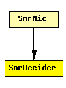

File: NetworkInterfaces/MF80211/phyLayer/decider/SnrDecider.ned
C++ definition: click here
Decider module to be used with SnrEval
This component has been taken over from Mobility Framework 1.0a5.
The following diagram shows usage relationships between modules, networks and channels. Unresolved module (and channel) types are missing from the diagram. Click here to see the full picture.
If a module type shows up more than once, that means it has been defined in more than one NED file.
| SnrNic | This is the easiest nic to implement "real" network behaviour. It uses the CsmaMacLayer and the SnrDecider and SnrEval modules. |
| Name | Type | Description |
|---|---|---|
| debug | bool | debug switch |
| snrThresholdLevel | numeric |
| Name | Direction | Description |
|---|---|---|
| uppergateOut | output | |
| lowergateIn | input |
simple SnrDecider parameters: debug : bool, // debug switch snrThresholdLevel: numeric; gates: out: uppergateOut; in: lowergateIn; endsimple